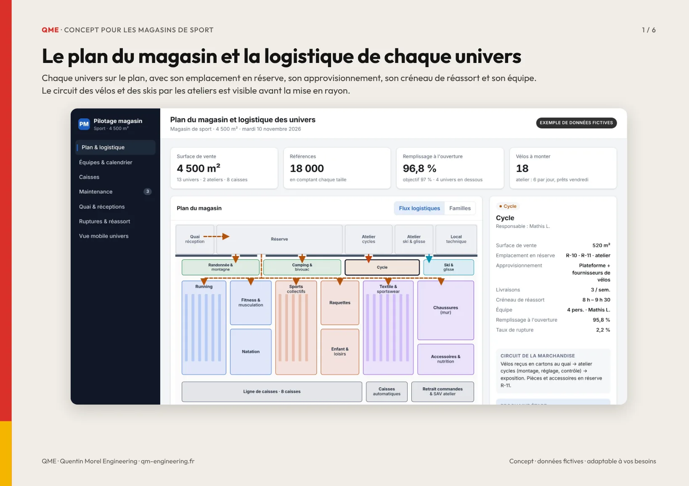
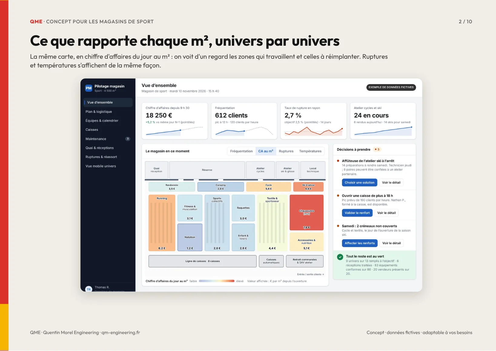
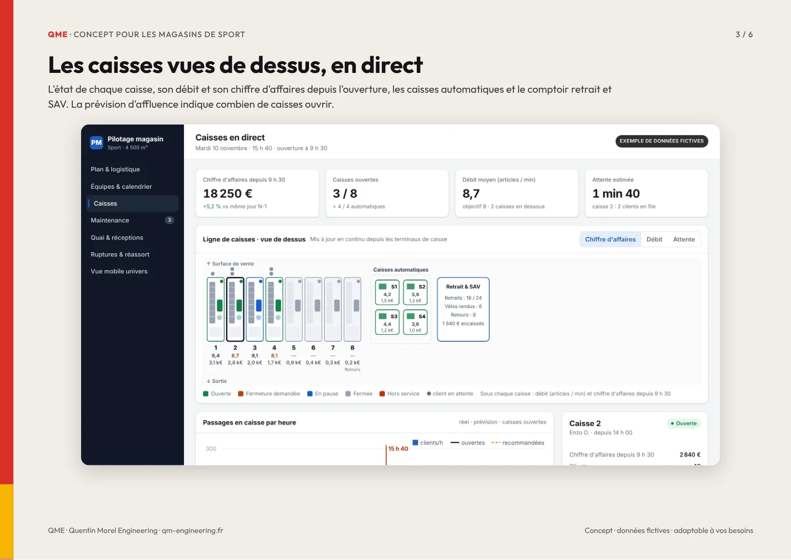
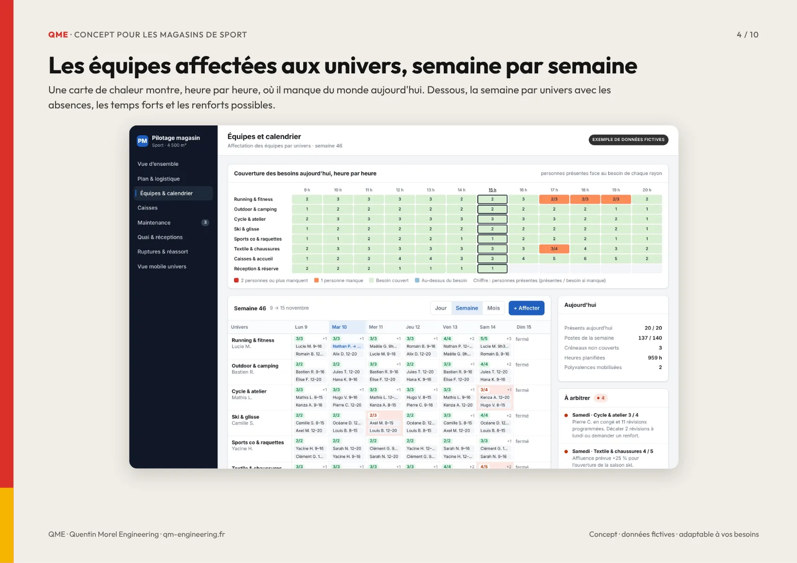
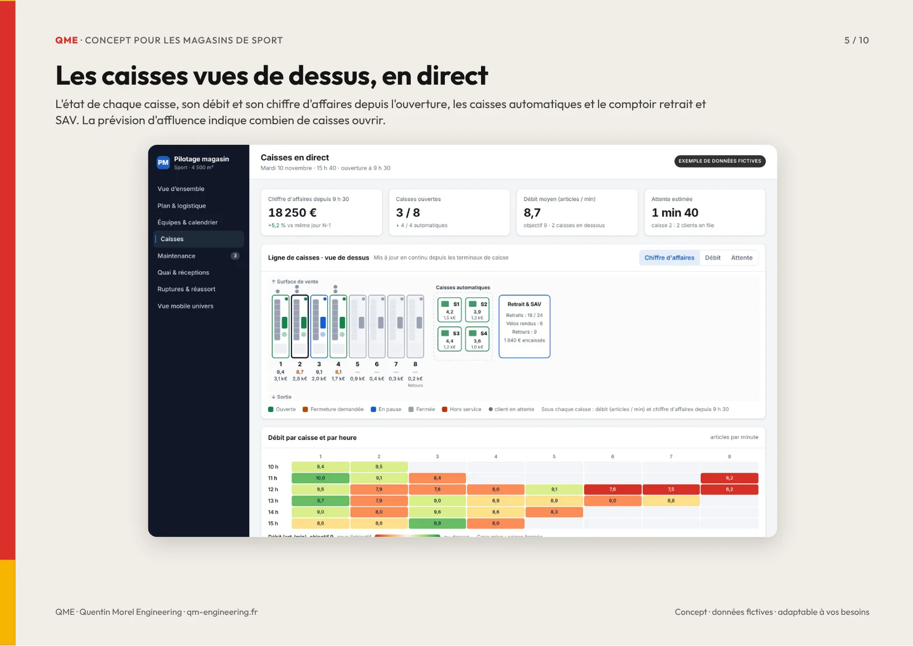
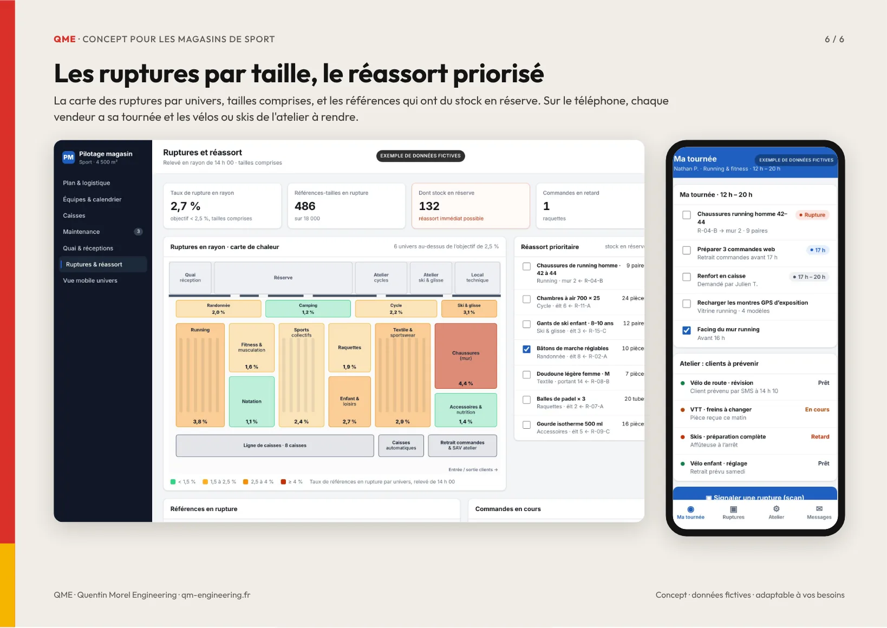

Concept pour les magasins de sport
Un outil de pilotage pensé pour les grandes surfaces de sport : le plan du magasin et la logistique de chaque univers, l'affectation des équipes, les caisses en direct, la maintenance des équipements et des ateliers, le quai et les réceptions, les ruptures par taille, sur ordinateur et sur le téléphone des vendeurs. Toutes les données sont fictives. Tout peut être adapté à votre magasin et construit par modules.






QME · Gain attendu
Ce que l'outil vous fait gagner
Environ 600 heures gagnées chaque annéesoit près de quatre mois de travail d’une personne, rendus à la vente et au conseil.
Le temps gagné
- Plannings des univers construits et ajustés sans tableur : environ 180 h par an
- Relevé des ruptures par taille et priorisation du réassort : environ 150 h
- Réceptions et suivi des vélos et skis de l’atelier : environ 150 h
- Ouverture des caisses pilotée par la prévision d’affluence : environ 75 h
- Suivi des interventions et relances des prestataires : environ 50 h
Ce qui devient fiable
- Aucun client de l’atelier n’attend sans être prévenu
- Aucune vérification réglementaire n’est oubliée
- Les jours de pointe, chaque univers et chaque caisse sont couverts
- Les pointures disponibles en réserve remontent en rayon en premier
- Les litiges fournisseurs sont documentés, photos à l’appui
Ordres de grandeur estimés pour un magasin de sport d’environ 4 500 m² et 35 salariés, avec atelier cycles et ski, à affiner ensemble avec vos vrais volumes.